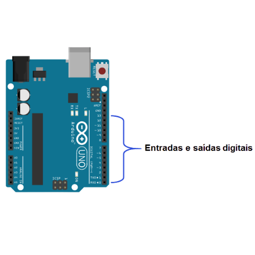
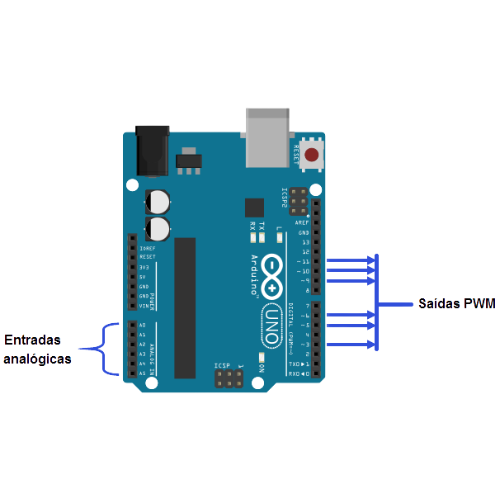

Arduino é uma plataforma de prototipagem eletrônica composta por uma placa física com um microcontrolador e um software para programá-la. Ela permite conectar sensores, LEDs, motores e diversos módulos para criar projetos como robôs, automações, sistemas inteligentes e experimentos escolares. É muito usada porque é barata, fácil de aprender e possui grande quantidade de materiais e exemplos disponíveis, sendo ideal tanto para iniciantes quanto para projetos mais avançados.
O Arduino oferece diversas vantagens, como a facilidade de aprendizado e o baixo custo, tornando-o acessível para iniciantes e estudantes. Ele conta com uma grande comunidade que fornece suporte e muitos exemplos prontos. Também é compatível com uma ampla variedade de sensores e módulos, permitindo criar projetos simples ou complexos. Além disso, é excelente para prototipagem rápida, funciona em diferentes sistemas operacionais e, por ser de código aberto, pode ser modificado e adaptado conforme a necessidade.
O Arduino apresenta algumas desvantagens que podem limitar certos tipos de projetos. Ele possui pouco poder de processamento e memória, o que dificulta aplicações mais complexas ou que exigem rapidez e precisão. Além disso, alguns sensores e módulos podem ser difíceis de configurar ou não funcionar tão bem quanto em plataformas mais avançadas. Também não é a melhor escolha para projetos industriais, já que não foi feito para ambientes mais rigorosos. Por fim, embora sua programação seja simples, isso pode limitar projetos que precisam de recursos mais avançados ou maior desempenho.
O Arduino serve para programar e controlar dispositivos eletrônicos de maneira simples e prática. Ele permite criar, testar e automatizar sistemas usando sensores, motores, LEDs e outros componentes. É uma ferramenta muito útil para aprender eletrônica, desenvolver protótipos e transformar ideias em projetos funcionais.
O Arduino é usado em projetos escolares, robótica, automação residencial, controle de luzes e motores, alarmes, estações meteorológicas, sistemas inteligentes, experimentos de laboratório e projetos de Internet das Coisas (IoT). Também é utilizado para criar protótipos de produtos tecnológicos e soluções inovadoras em diversas áreas.
___________________________________________________________________________________________________________________
O Arduino funciona como um pequeno computador capaz de ler informações do ambiente e executar ações a partir delas. Ele recebe dados por meio de sensores, processa essas informações no seu microcontrolador e, com base no código programado, envia comandos para atuadores, como LEDs, motores e outros dispositivos. Primeiro, você escreve um código no computador usando a IDE Arduino. Depois, esse código é enviado para a placa por meio de um cabo USB. A partir daí, o Arduino começa a executar o programa continuamente, lendo entradas, tomando decisões e controlando os componentes conectados. Dessa forma, ele transforma instruções simples em ações reais no mundo físico.
Eletrônica embarcada é a área que trabalha com sistemas eletrônicos integrados dentro de máquinas, veículos
ou dispositivos, fazendo com que eles realizem funções automáticas sem precisar de um computador externo.
Esses sistemas são compostos por microcontroladores, sensores, atuadores e circuitos eletrônicos, todos
instalados “embarcados” dentro do equipamento. Eles permitem que o dispositivo pense, tome decisões e
execute tarefas sozinho.
Em resumo, eletrônica embarcada é a tecnologia que dá “inteligência” a equipamentos do dia a dia, permitindo automação e funcionamento independente.
O Arduino oferece diversas vantagens, como a facilidade de aprendizado e o baixo custo, tornando-o acessível para iniciantes e estudantes. Ele conta com uma grande comunidade que fornece suporte e muitos exemplos prontos. Também é compatível com uma ampla variedade de sensores e módulos, permitindo criar projetos simples ou complexos. Além disso, é excelente para prototipagem rápida, funciona em diferentes sistemas operacionais e, por ser de código aberto, pode ser modificado e adaptado conforme a necessidade.
___________________________________________________________________________________________________________________

A linguagem oficial e mais usada para programar o Arduino é baseada em C/C++.
Ela é utilizada dentro do Arduino IDE, usando funções como setup() e loop().
Por que C/C++ é a principal?
É leve e rápido (ótimo para microcontroladores).
Tem acesso direto ao hardware (pinos, sensores, motores).
Possui muitas bibliotecas prontas.
É a linguagem dos exemplos oficiais.
O Arduino não usa Python nativamente, mas pode ser programado em Python em algumas situações:
Quando Python funciona no Arduino?
Placas especiais compatíveis com MicroPython
Ex.: ESP32, ESP8266, Raspberry Pi Pico (embora não sejam Arduinos “clássicos”).
Usando o Python no computador
→ Você roda um código Python no PC que manda comandos para o Arduino pela porta serial.
O Arduino executa apenas o que recebe.
Ou seja: o Arduino tradicional não executa Python internamente.
___________________________________________________________________________________________________________________

Em circuitos integrados como o Arduino, entradas e saídas digitais são pinos capazes de trabalhar apenas com
dois estados: ligado ou desligado.
Quando funcionam como entradas digitais, esses pinos recebem sinais
elétricos vindos de componentes externos, interpretando tensões altas como nível lógico 1 (HIGH) e tensões
baixas como nível lógico 0 (LOW).
Isso permite ao Arduino detectar eventos simples, como o acionamento de um
botão ou a mudança de estado em um sensor.
Quando atuam como saídas digitais, esses pinos enviam sinais elétricos para controlar dispositivos externos.
Assim, o Arduino pode ligar ou desligar LEDs, acionadores sonoros, relés ou outros módulos compatíveis que
operem em nível lógico digital.
Dessa forma, entradas digitais servem para o Arduino receber informações,
enquanto saídas digitais servem para controlar dispositivos externos por meio de sinais de 0 e 1.

Entradas e saídas analógicas no Arduino são pinos capazes de trabalhar com valores variáveis, diferente dos digitais, que só reconhecem ligado ou desligado. As entradas analógicas servem para ler sinais contínuos, ou seja, tensões que podem variar dentro de um intervalo, normalmente de 0 a 5 volts. O Arduino converte essas tensões em valores numéricos usando um conversor A/D, permitindo interpretar grandezas como luminosidade, temperatura ou posição.
Já as saídas analógicas, embora chamadas assim, na maioria dos modelos Arduino são produzidas por um sinal PWM, que imita diferentes níveis de potência variando rapidamente entre ligado e desligado. Isso permite controlar a intensidade de LEDs, a velocidade de motores e outros dispositivos que precisam de ajustes mais finos. Em resumo, entradas analógicas leem variações reais de tensão, enquanto saídas analógicas geram níveis ajustáveis para controlar equipamentos externamente.